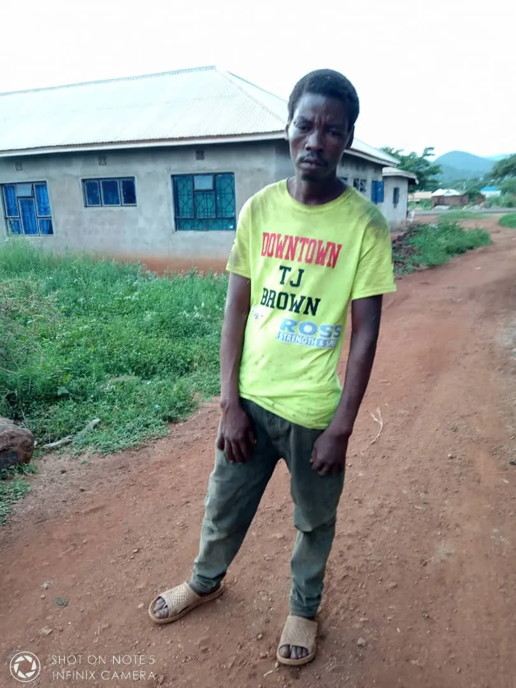
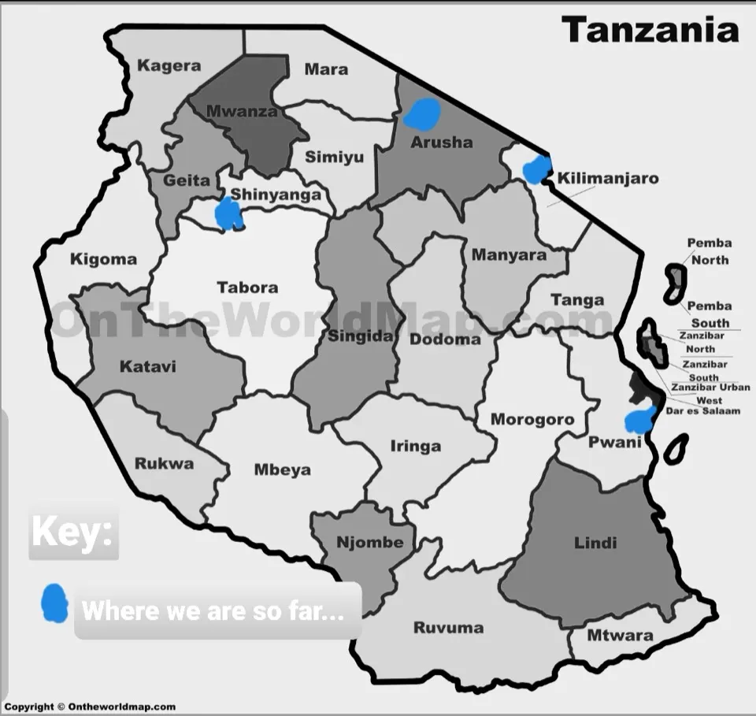
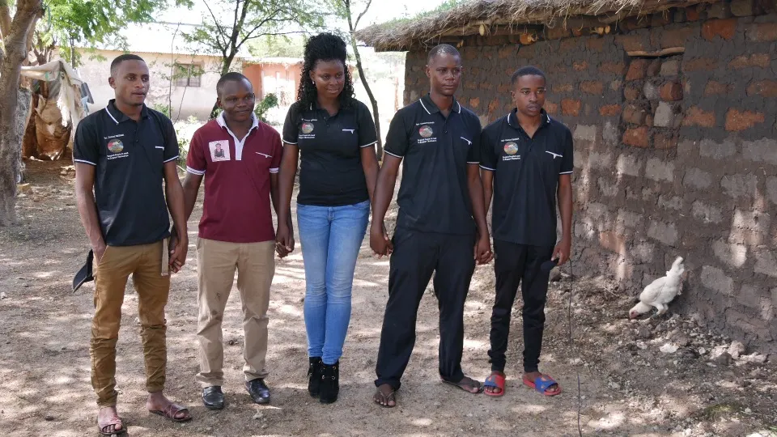
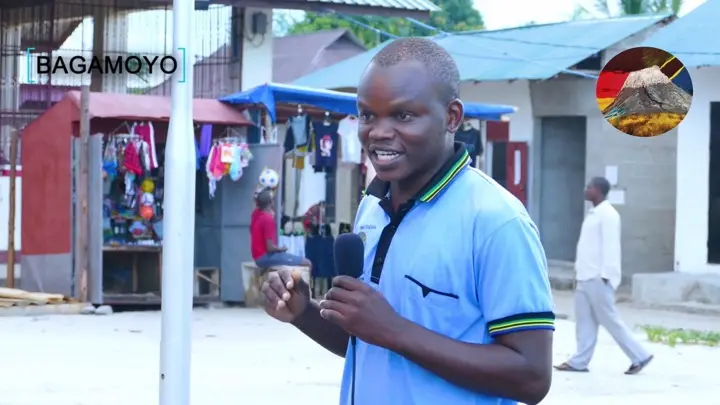

Agri-Connect Tanzania
Future plans
Agri-Connect Tanzania
Agri-Connect TANZANIA - NEXT STEPS
Agri-Connect Tanzania
ESTABLISHING THAT CENTRE
One of A-CT next step is to have Youth transformation Center. The centre will have hostels and buildings which supports small projects where young people who will be taken through transformation process can also be helped to be busy in learning how to carry their new life independently and through working hard. Could be restaurant, saloon, stationery, farming, etc.
Transformation process will target youth with addictions, alcoholism, drugs and those who have lived unhealth life and lead them to physical unhelth and mentaly giving up. The centre will be located in the headquator of Agri- Connect Tanzania in Kilimanjaro as a starting point, but later we are planning to have more centres in other Regions.
EXPERTS
This next step requires building Experts with different knowledge to train and teach. In this case the door is open for volunteers from diffferent parts of the world to support this. Exposure through different experts from different areas plays a big role in mindset changing which is one of our targets.

An example of a young person who is already in alcoholism addiction and need the process of transformation.

Source: http://ontheworldmap.com/tanzania/tanzania-regions-map.jpg (29.3.2020)
Agri-Connect Tanzania Coverage
Agri-connect Tanzania aims to reach youth all over the Country and therefore aims to upscale the groups within Tanzania, to the regions step by step. Until now the groups are in Kilimanjaro, Arusha, Bagamoyo and Shinyanga. The regions the idea is already introduced but not yet established to young groups is Mwanza, Morogoro and Dar es Slaam.
Agri-Connect Tanzania Team
As Agri-Connect Tanzania aims to reach all young people interested, it wont be easy with just one team. A-CT aims to have more team members who will start as Volunteers. The teams will be in sub regions. Example until Now we have A-CT Northern Team, and we are working hard to equip more teams in other regions to help the big demand we are having from young people. The team in North region is equiped as a main team who also sometimes travel to support the project in other regions. The members in the team are so far 8, and among the members Gender balance is taken into account and we have 4 men and 4 women in the team..
Thank You for the big support
In accomplishing all these we are open to any one who may kindly be willing to support this project with ideas, expertism, money and any other material supported related to Youth environment including machines rrlated to Agriculture practices.
Directors, board of Directors and A-CT Team, is thanking you all for your support-. Without You we wouldnt have reached the big step we are now. Your support counts big for our community development. Thank you again for standing with us.

Agri-Connect Tanzania - Northern team. the 3 missing are ladies. we care about gender equality.
Our Journey from 1 Group to 8 youth Groups

Opens YouTube in a new tab"It hasnt been easy, it is not easy as it never be easy, but it is possible and always possible. Anything great with great impacts must be not just easy. More power comes from having more knowledge, and more practical knowledge, comes from life experience and it is always through things we always find are not just easy" (Agnes Link) Together we can. "PAMOJA KW UMOJA"